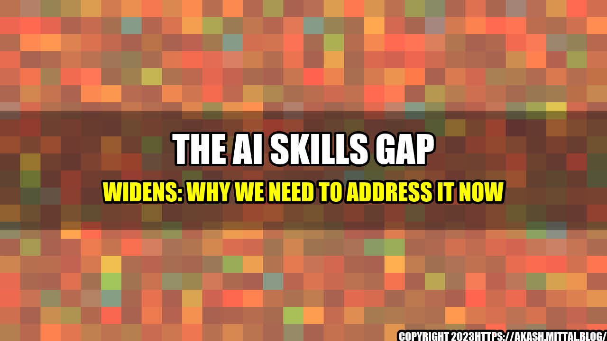

The AI Skills Gap Widens: Why We Need to Address it Now

It's no secret that artificial intelligence (AI) is transforming the way we work and live. From self-driving cars to chatbots, we are witnessing a rapid adoption of intelligent systems across industries. However, as AI moves faster than real life, it is creating a skills gap that threatens to leave many workers behind.
Take Susie, for example. Susie is a middle-aged customer service employee at a large retail company. She has been with the company for over a decade and has always received positive performance reviews. When her manager informed her that the company was implementing an AI-powered chatbot to handle customer inquiries, Susie was excited to learn a new skill. However, after weeks of trying to understand the technology, she realized that her lack of technical knowledge was a barrier to mastering the new tool.
Unfortunately, Susie's story is not unique. Many workers across different sectors are finding themselves ill-equipped to handle the rise of intelligent machines in the workplace. According to a recent report by Randstad, 84% of employers believe that they will soon experience a skills gap due to the rise of AI, but only 1 in 4 have taken steps to address the issue.
the AI Skills Gap
- By 2022, the World Economic Forum predicts that 54% of all employees will require significant re- and upskilling.
- According to a survey by Deloitte, 33% of companies believe their employees lack the necessary skills to work with AI, but only 17% are providing training opportunities.
- A study by McKinsey & Company found that by 2030, up to 375 million workers (14% of the global workforce) may need to switch occupational categories due to AI and automation.
Practical Tips for Addressing the AI Skills Gap
- Offer training programs to employees that focus on developing digital and analytical skills.
- Provide mentorship opportunities and encourage employees to collaborate with AI technology as a way to get comfortable working with new tools.
- Create a culture of continuous learning and encourage employees to take on new challenges and embrace lifelong learning.
- Partner with educational institutions to offer apprenticeships and internships to students interested in AI-related fields.
Why We Need to Address the AI Skills Gap Now
- AI is here to stay, and the skills gap will only widen if we don't take action. By developing a workforce that is equipped to work with intelligent machines, we can ensure that our economies continue to thrive.
- Investing in employee training is not only good for business but also for society as a whole. By providing workers with the skills they need to succeed in a rapidly changing job market, we can reduce the risk of income inequality and social exclusion.
- The AI revolution has the potential to benefit everyone, but only if we ensure that no one is left behind. By addressing the skills gap, we can create a future in which AI is used to enrich our lives rather than replace them.
References and Hashtags
Category: Artificial Intelligence, Workforce Development
Curated by Team Akash.Mittal.Blog
Share on Twitter Share on LinkedIn